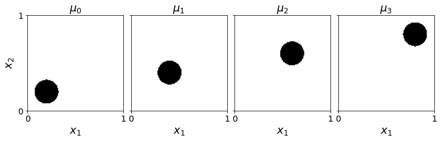
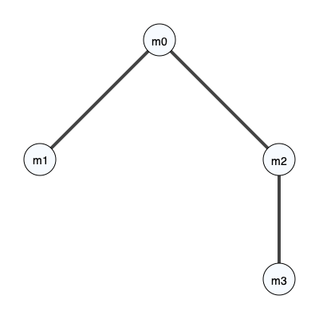
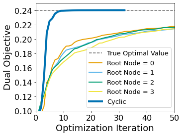
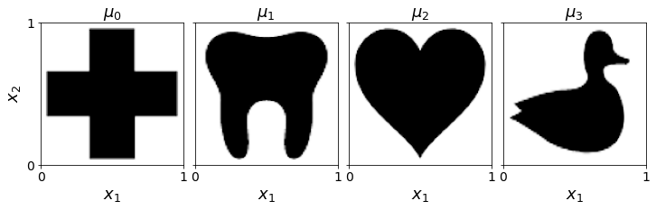
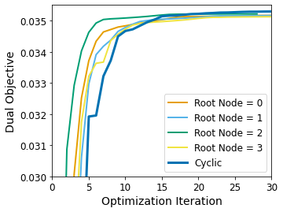
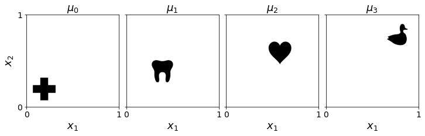
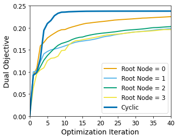

Comparison of Root Node Selection#
[1]:
from mmot import MMOTSolver
import numpy as np
import matplotlib.pyplot as plt
from scipy.ndimage import gaussian_filter
Simple Translation#
[2]:
# Grid of size n1 x n2
n1 = 128 # x axis
n2 = 128 # y axis
x, y = np.meshgrid(np.linspace(0.5/n1,1-0.5/n1,n1), np.linspace(0.5/n2,1-0.5/n1,n2))
r = 0.125
positions = np.array([[0.2,0.8],
[0.4,0.6],
[0.6,0.4],
[0.8,0.2]])
# measures = [None]*len(positions)
measures = [None]*(len(positions))
for i in range(len(positions)):
xc,yc = positions[i]
measures[i] = np.zeros((n2, n1))
measures[i][(x-xc)**2 + (y-yc)**2 < r**2] = 1
# Normalize
measures[i] *= n1*n2 / np.sum(measures[i])
measures[i] = np.flipud(measures[i])
[3]:
def plot_measures(measures, filename):
fig, ax = plt.subplots(1, len(measures), figsize=(12,6),sharey=True)
for i in range(len(measures)):
ax[i].imshow(measures[i], origin='lower', extent=(0,1,0,1), cmap='Greys')
ax[i].set_title("$\\mu_{{ {:0d} }}$".format(i),fontsize=18)
ax[i].set_xlabel('$x_1$',fontsize=18)
ax[i].set_xticks([0,1])
ax[i].set_yticks([0,1])
ax[i].tick_params(axis='x',labelsize=14)
ax[i].tick_params(axis='y',labelsize=14)
ax[0].set_ylabel('$x_2$',fontsize=18)
plt.subplots_adjust(wspace=0.08)
plt.savefig(filename,bbox_inches='tight')
plt.show()
plot_measures(measures, 'CycleMeasures1.pdf')

[4]:
unroll_node = 0
edge_list = [[0,1],
[0,2],
[2,3]]
prob = MMOTSolver(measures, edge_list, x, y, unroll_node)
prob.Visualize('original', filename='CycleCostGraph.svg')

[5]:
root_node_options = [[i] for i in range(len(measures))] + ['all']
results1 = []
for root_nodes in root_node_options:
results1.append( prob.Solve(max_its=500, step_size=1.0, ftol_abs=1e-6, gtol_abs=1e-5, root_nodes=root_nodes) )
Iteration, StepSize, Cost, Error, Line Its
0, 1.0000, 9.3533e-02, 1.6487e+00, 0
10, 0.1780, 1.8999e-01, 1.0794e-01, 0
20, 0.0713, 2.0181e-01, 1.1863e-02, 0
30, 0.1712, 2.0945e-01, 6.7757e-03, 0
40, 0.0171, 2.1453e-01, 3.1930e-02, 4
50, 0.0103, 2.1773e-01, 8.9650e-03, 0
60, 0.0247, 2.1996e-01, 4.3413e-02, 4
70, 0.0149, 2.2207e-01, 6.3143e-03, 0
80, 0.0179, 2.2366e-01, 4.2477e-03, 0
90, 0.0107, 2.2508e-01, 4.5496e-03, 0
100, 0.0129, 2.2621e-01, 8.3098e-03, 5
110, 0.0077, 2.2716e-01, 1.4581e-02, 6
120, 0.4463, 2.2806e-01, 9.0279e-04, 0
130, 0.2681, 2.2867e-01, 6.5241e-04, 0
140, 0.3221, 2.2934e-01, 5.2032e-04, 0
150, 0.1935, 2.2980e-01, 4.3518e-04, 0
160, 0.1162, 2.3019e-01, 3.8975e-04, 0
170, 0.0698, 2.3073e-01, 4.0966e-04, 0
180, 0.0419, 2.3115e-01, 5.5156e-04, 0
190, 0.0252, 2.3152e-01, 4.6002e-04, 0
200, 0.0151, 2.3192e-01, 1.5814e-03, 0
210, 0.0091, 2.3220e-01, 3.2164e-04, 0
220, 0.5240, 2.3243e-01, 2.2690e-04, 0
230, 0.3148, 2.3265e-01, 1.8236e-04, 0
240, 0.1891, 2.3294e-01, 1.6634e-04, 0
250, 0.1136, 2.3309e-01, 1.4277e-04, 0
260, 0.0682, 2.3329e-01, 1.4958e-04, 0
270, 0.0410, 2.3346e-01, 1.3365e-04, 0
280, 0.0246, 2.3368e-01, 3.5438e-04, 0
290, 0.0148, 2.3381e-01, 1.3580e-04, 0
300, 0.0089, 2.3396e-01, 3.2205e-03, 6
300, 0.0089, 2.3396e-01, 3.2205e-03, 6
Terminating due to small change in objective.
Iteration, StepSize, Cost, Error, Line Its
0, 1.0000, 9.8861e-02, 1.6487e+00, 0
10, 0.1780, 1.8449e-01, 8.6854e-02, 0
20, 0.0713, 1.9630e-01, 1.2615e-01, 2
30, 0.1712, 2.0578e-01, 9.2595e-03, 0
40, 0.4115, 2.1116e-01, 1.0200e-02, 0
50, 0.2472, 2.1487e-01, 5.8148e-03, 0
60, 0.0062, 2.1781e-01, 2.3888e-02, 6
70, 0.3567, 2.2008e-01, 3.7215e-03, 0
80, 0.0179, 2.2210e-01, 1.3876e-02, 0
90, 0.0107, 2.2362e-01, 2.8598e-03, 0
100, 0.0129, 2.2499e-01, 1.9858e-02, 5
110, 0.0077, 2.2603e-01, 2.4604e-03, 0
120, 0.4463, 2.2713e-01, 1.0580e-03, 0
130, 0.2681, 2.2781e-01, 8.1107e-04, 0
140, 0.1610, 2.2839e-01, 7.1245e-04, 0
150, 0.0967, 2.2922e-01, 6.9832e-04, 0
160, 0.1162, 2.2974e-01, 5.3856e-04, 0
170, 0.0698, 2.3022e-01, 5.1683e-04, 0
180, 0.0419, 2.3062e-01, 4.4728e-04, 0
190, 0.0252, 2.3106e-01, 8.4021e-04, 0
200, 0.0151, 2.3144e-01, 1.2983e-03, 0
210, 0.0091, 2.3181e-01, 4.8237e-04, 0
220, 0.5240, 2.3219e-01, 2.8182e-04, 0
230, 0.3148, 2.3242e-01, 2.5740e-04, 0
240, 0.1891, 2.3265e-01, 2.3713e-04, 0
250, 0.1136, 2.3287e-01, 2.3008e-04, 0
260, 0.0341, 2.3313e-01, 3.5052e-04, 0
266, 0.0081, 2.3325e-01, 6.0536e-04, 5
Terminating due to small change in objective.
Iteration, StepSize, Cost, Error, Line Its
0, 1.0000, 9.7929e-02, 1.6487e+00, 0
10, 0.0667, 1.7611e-01, 7.3654e-02, 0
20, 0.1604, 1.9727e-01, 2.0635e-02, 0
30, 0.3853, 2.0735e-01, 1.8173e-02, 0
40, 0.0386, 2.1315e-01, 6.9217e-03, 0
50, 0.0927, 2.1671e-01, 3.9872e-03, 0
60, 0.0557, 2.1971e-01, 4.4278e-03, 0
70, 0.0334, 2.2178e-01, 4.7255e-03, 0
80, 0.0803, 2.2394e-01, 2.1339e-03, 0
90, 0.1931, 2.2579e-01, 1.3930e-03, 0
100, 0.4639, 2.2726e-01, 1.0647e-03, 0
110, 0.2786, 2.2796e-01, 9.0661e-04, 0
120, 0.3347, 2.2888e-01, 7.4537e-04, 0
130, 0.2011, 2.2953e-01, 7.3315e-04, 0
140, 0.1208, 2.3015e-01, 5.7880e-04, 0
150, 0.0725, 2.3065e-01, 5.1895e-04, 0
160, 0.0436, 2.3125e-01, 6.4268e-04, 0
170, 0.0262, 2.3173e-01, 7.0166e-04, 0
180, 0.0157, 2.3212e-01, 4.7696e-04, 0
190, 0.0094, 2.3247e-01, 1.2008e-02, 6
200, 0.5446, 2.3283e-01, 3.0275e-04, 0
210, 0.3271, 2.3313e-01, 2.2922e-04, 0
220, 0.1965, 2.3333e-01, 2.1325e-04, 0
230, 0.1180, 2.3361e-01, 2.2715e-04, 0
240, 0.0709, 2.3386e-01, 2.8952e-04, 0
250, 0.0426, 2.3407e-01, 2.4582e-04, 0
260, 0.0256, 2.3424e-01, 1.5693e-04, 0
270, 0.0154, 2.3443e-01, 4.9392e-04, 0
280, 0.0092, 2.3456e-01, 1.3204e-04, 0
290, 0.5323, 2.3471e-01, 1.1280e-04, 0
292, 0.0031, 2.3478e-01, 2.8299e-04, 8
Terminating due to small change in objective.
Iteration, StepSize, Cost, Error, Line Its
0, 1.0000, 7.5193e-02, 1.6487e+00, 0
10, 0.0667, 1.7079e-01, 8.8683e-02, 0
20, 0.1604, 1.8978e-01, 2.3351e-02, 0
30, 0.3853, 2.0254e-01, 2.6970e-02, 0
40, 0.0386, 2.1006e-01, 1.1748e-02, 0
50, 0.0927, 2.1455e-01, 4.8304e-03, 0
60, 0.0557, 2.1711e-01, 4.0288e-03, 0
70, 0.0334, 2.1972e-01, 4.7940e-03, 0
80, 0.0402, 2.2196e-01, 4.2263e-03, 0
90, 0.0483, 2.2352e-01, 1.9200e-03, 0
100, 0.0290, 2.2486e-01, 1.7444e-03, 0
110, 0.0174, 2.2592e-01, 1.4956e-03, 0
120, 0.0105, 2.2709e-01, 2.5832e-03, 0
130, 0.0063, 2.2795e-01, 4.5962e-03, 6
140, 0.3623, 2.2875e-01, 8.1419e-04, 0
150, 0.2176, 2.2919e-01, 7.6267e-04, 0
160, 0.1307, 2.2989e-01, 6.2531e-04, 0
170, 0.0785, 2.3045e-01, 5.8399e-04, 0
180, 0.0472, 2.3089e-01, 5.3080e-04, 0
190, 0.0283, 2.3141e-01, 1.0435e-03, 0
200, 0.0170, 2.3186e-01, 9.3113e-04, 0
208, 0.0091, 2.3214e-01, 1.8259e-03, 5
Terminating due to small change in objective.
Iteration, StepSize, Cost, Error, Line Its
0, 1.0000, 9.3533e-02, 1.6487e+00, 0
10, 0.0111, 2.3959e-01, 1.4806e-02, 0
20, 0.0267, 2.4013e-01, 8.6420e-04, 0
30, 0.0285, 2.4018e-01, 1.1389e-04, 1
31, 0.0143, 2.4018e-01, 4.9538e-04, 1
Terminating due to small change in objective.
[6]:
def plot_history(results, xlim, ylim):
colors = ['#E69F00', '#56B4E9', '#009E73', '#F0E442', '#0072B2', '#D55E00', '#CC79A7'] # colorblind safe, from https://davidmathlogic.com/colorblind
for i,res in enumerate(results):
if(root_node_options[i]!='all'):
plt.plot(res.costs,label='Root Node = {}'.format(root_node_options[i][0]), c=colors[i], linewidth=2)
else:
plt.plot(res.costs,label='Cyclic',linewidth=4, c=colors[i])
plt.xlim(xlim)
plt.ylim(ylim)
plt.ylabel('Dual Objective',fontsize=18)
plt.xlabel('Optimization Iteration',fontsize=18)
plt.legend(fontsize=13)
plt.xticks(fontsize=16)
plt.yticks(fontsize=16)
plt.figure(figsize=(5,4))
true_val = 3*(0.2**2 + 0.2**2)
plt.plot([0,300],[true_val,true_val], '--k', alpha=0.6,label='True Optimal Value')
plot_history(results1, [0,50], [0.1,0.25])
plt.savefig('CyclePerformance1.pdf',bbox_inches='tight')
plt.show()

More Complicated Marginals#
[7]:
def pad(img,pad_size=5):
temp = np.ones((img.shape[0]+2*pad_size,img.shape[1]+2*pad_size))
temp[pad_size:-pad_size,pad_size:-pad_size] = img
return temp
[8]:
measures = [None]*4
measures[0] = np.flipud(1-pad(plt.imread('images/redcross.png')[:, :, 2]))
measures[1] = np.flipud(1-pad(plt.imread('images/tooth.png')[:, :, 2]))
measures[2] = np.flipud(1-pad(plt.imread('images/heart.png')[:, :, 2]))
measures[3] = np.flipud(1-pad(plt.imread('images/duck.png')[:, :, 2]))
for i in range(len(measures)):
measures[i] *= np.prod(measures[i].shape)/np.sum(measures[i])
print('Marginal size = ', measures[0].shape)
# Grid of size n1 x n2
n1,n2 = measures[0].shape
x, y = np.meshgrid(np.linspace(0.5/n1,1-0.5/n1,n1), np.linspace(0.5/n2,1-0.5/n1,n2))
Marginal size = (138, 138)
[9]:
plot_measures(measures, 'CycleMeasures2.pdf')

[10]:
prob = MMOTSolver(measures, edge_list, x, y, unroll_node)
results2 = []
for root_nodes in root_node_options:
results2.append( prob.Solve(max_its=500, step_size=1.0, ftol_abs=1e-12, gtol_abs=1e-8, root_nodes=root_nodes) )
Iteration, StepSize, Cost, Error, Line Its
0, 1.0000, 7.5329e-03, 9.2336e-02, 0
10, 0.1406, 3.4876e-02, 3.9199e-04, 0
20, 0.1406, 3.5136e-02, 3.8914e-05, 0
30, 0.1406, 3.5166e-02, 2.1229e-05, 0
35, 0.0000, 3.5166e-02, 1.9613e-05, 20
Terminating due to failed line search.
Iteration, StepSize, Cost, Error, Line Its
0, 1.0000, 1.1772e-03, 9.2336e-02, 0
10, 0.8438, 3.4884e-02, 2.6147e-04, 0
20, 1.0000, 3.5124e-02, 5.1051e-05, 0
30, 1.0000, 3.5163e-02, 2.3160e-05, 0
36, 0.0000, 3.5164e-02, 1.8731e-05, 20
Terminating due to failed line search.
Iteration, StepSize, Cost, Error, Line Its
0, 1.0000, 2.0947e-02, 9.2336e-02, 0
10, 0.2109, 3.5098e-02, 1.2614e-04, 0
20, 0.2109, 3.5211e-02, 2.8292e-05, 0
28, 0.0000, 3.5215e-02, 2.0520e-05, 20
Terminating due to failed line search.
Iteration, StepSize, Cost, Error, Line Its
0, 1.0000, 8.7586e-03, 9.2336e-02, 0
10, 1.0000, 3.4856e-02, 2.6900e-04, 0
20, 1.0000, 3.5093e-02, 5.5863e-05, 0
30, 1.0000, 3.5124e-02, 2.5216e-05, 0
[ ]:
plt.figure(figsize=(5,4))
plot_history(results2, [0,30], [0.03,0.0355])
plt.savefig('CyclePerformance2.pdf',bbox_inches='tight')
plt.show()

Complicated Marginals with Translation#
[ ]:
n1, n2 = 512,512
measures = [np.zeros]*4
measures[0] = np.zeros((n1,n2))
measures[0][30:168,30:168] = np.flipud(1-pad(plt.imread('images/redcross.png')[:, :, 2]))
measures[1] = np.zeros((n1,n2))
measures[1][130:268,130:268] = np.flipud(1-pad(plt.imread('images/tooth.png')[:, :, 2]))
measures[2] = np.zeros((n1,n2))
measures[2][230:368,230:368] = np.flipud(1-pad(plt.imread('images/heart.png')[:, :, 2]))
measures[3] = np.zeros((n1,n2))
measures[3][330:468,330:468] = np.flipud(1-pad(plt.imread('images/duck.png')[:, :, 2]))
for i in range(len(measures)):
measures[i] *= np.prod(measures[i].shape)/np.sum(measures[i])
print('Marginal size = ', measures[0].shape)
# Grid of size n1 x n2
n1,n2 = measures[0].shape
x, y = np.meshgrid(np.linspace(0.5/n1,1-0.5/n1,n1), np.linspace(0.5/n2,1-0.5/n1,n2))
Marginal size = (512, 512)
[ ]:
plot_measures(measures,'CycleMeasures3.pdf')

[ ]:
prob = MMOTSolver(measures, edge_list, x, y, unroll_node)
results3 = []
for root_nodes in root_node_options:
results3.append( prob.Solve(max_its=500, step_size=1.0, ftol_abs=1e-12, gtol_abs=1e-8, root_nodes=root_nodes) )
Iteration, StepSize, Cost, Error, Line Its
0, 1.0000, 9.2471e-02, 1.7104e+00, 0
10, 0.0167, 1.9941e-01, 5.7183e-01, 4
20, 0.0401, 2.1462e-01, 3.7062e-02, 0
30, 0.0963, 2.2143e-01, 1.6990e-02, 0
40, 0.0096, 2.2549e-01, 4.2117e-02, 4
50, 0.0232, 2.2776e-01, 3.7576e-02, 0
60, 0.0557, 2.2950e-01, 3.9122e-03, 0
70, 0.1338, 2.3085e-01, 3.0568e-03, 0
80, 0.1607, 2.3171e-01, 2.7484e-03, 0
90, 0.1931, 2.3246e-01, 2.9854e-03, 0
100, 0.2319, 2.3299e-01, 2.5063e-03, 0
110, 0.0116, 2.3347e-01, 1.2105e-02, 4
120, 0.0070, 2.3384e-01, 2.1056e-03, 0
130, 0.0168, 2.3414e-01, 1.8958e-03, 0
140, 0.0101, 2.3439e-01, 1.1310e-03, 0
150, 0.0242, 2.3461e-01, 8.4387e-04, 0
160, 0.0291, 2.3481e-01, 5.2401e-04, 0
170, 0.0175, 2.3500e-01, 6.5613e-04, 0
180, 0.0210, 2.3517e-01, 5.2552e-04, 0
190, 0.0126, 2.3533e-01, 7.1981e-04, 0
200, 0.0076, 2.3547e-01, 6.2893e-04, 0
210, 0.0045, 2.3561e-01, 6.1263e-03, 6
220, 0.0055, 2.3573e-01, 1.2316e-03, 5
230, 0.0033, 2.3584e-01, 8.1923e-04, 6
240, 0.1891, 2.3593e-01, 2.3889e-04, 0
250, 0.1136, 2.3601e-01, 2.0448e-04, 0
260, 0.0682, 2.3609e-01, 2.0338e-04, 0
270, 0.0820, 2.3615e-01, 1.6242e-04, 0
280, 0.0492, 2.3623e-01, 1.6668e-04, 0
290, 0.0296, 2.3630e-01, 1.9632e-04, 0
300, 0.0178, 2.3636e-01, 1.9614e-04, 0
310, 0.0107, 2.3641e-01, 1.5854e-04, 0
320, 0.0064, 2.3646e-01, 3.5264e-04, 0
330, 0.0038, 2.3651e-01, 1.0911e-03, 6
340, 0.2220, 2.3656e-01, 1.1630e-04, 0
350, 0.1333, 2.3659e-01, 9.7306e-05, 0
360, 0.0801, 2.3662e-01, 9.1355e-05, 0
370, 0.0481, 2.3666e-01, 9.4923e-05, 0
380, 0.0289, 2.3670e-01, 1.0021e-04, 0
390, 0.0174, 2.3673e-01, 1.0246e-04, 0
400, 0.0104, 2.3676e-01, 8.4501e-05, 0
410, 0.0063, 2.3679e-01, 1.1831e-04, 0
420, 0.0038, 2.3682e-01, 4.4051e-04, 6
430, 0.2170, 2.3684e-01, 6.9434e-05, 0
440, 0.1303, 2.3686e-01, 6.2484e-05, 0
450, 0.0783, 2.3689e-01, 6.2775e-05, 0
460, 0.0470, 2.3691e-01, 6.0151e-05, 0
470, 0.0282, 2.3693e-01, 7.1016e-05, 0
480, 0.0339, 2.3695e-01, 5.3772e-05, 0
490, 0.0204, 2.3697e-01, 8.3179e-05, 0
Iteration, StepSize, Cost, Error, Line Its
0, 1.0000, 1.0021e-01, 1.7104e+00, 0
10, 0.0667, 1.6197e-01, 9.9164e-02, 0
20, 0.1604, 1.7971e-01, 7.0277e-02, 0
30, 0.0161, 1.9144e-01, 1.0079e-01, 0
40, 0.0386, 1.9855e-01, 2.2843e-02, 0
50, 0.0927, 2.0418e-01, 1.6054e-02, 0
60, 0.0093, 2.0849e-01, 5.5319e-02, 4
70, 0.0223, 2.1107e-01, 1.0312e-02, 0
80, 0.0536, 2.1338e-01, 6.2256e-03, 0
90, 0.1287, 2.1555e-01, 6.3970e-03, 0
100, 0.0129, 2.1678e-01, 5.9067e-02, 4
110, 0.0310, 2.1839e-01, 4.4263e-03, 0
120, 0.0744, 2.1960e-01, 3.2841e-03, 0
130, 0.1787, 2.2076e-01, 4.6614e-03, 0
140, 0.0179, 2.2174e-01, 1.4100e-02, 0
150, 0.0430, 2.2256e-01, 2.1972e-03, 0
160, 0.0258, 2.2327e-01, 2.9284e-03, 0
170, 0.0310, 2.2393e-01, 2.7994e-03, 0
180, 0.0186, 2.2443e-01, 2.2170e-03, 0
190, 0.0448, 2.2495e-01, 1.5077e-03, 0
200, 0.0269, 2.2545e-01, 2.1658e-03, 0
210, 0.0323, 2.2598e-01, 1.9838e-03, 0
220, 0.0388, 2.2641e-01, 1.3560e-03, 0
230, 0.0233, 2.2678e-01, 1.6695e-03, 0
240, 0.0140, 2.2713e-01, 1.8178e-03, 0
250, 0.0084, 2.2744e-01, 1.7116e-03, 0
260, 0.0202, 2.2774e-01, 1.3338e-03, 0
270, 0.0486, 2.2806e-01, 8.7257e-04, 0
280, 0.0292, 2.2829e-01, 8.7122e-04, 0
290, 0.0175, 2.2858e-01, 1.4300e-03, 0
300, 0.0211, 2.2887e-01, 1.5412e-03, 0
310, 0.0506, 2.2916e-01, 7.2711e-04, 0
320, 0.0608, 2.2939e-01, 6.7576e-04, 0
330, 0.0365, 2.2960e-01, 7.8246e-04, 0
340, 0.0219, 2.2980e-01, 8.3617e-04, 0
350, 0.0263, 2.2999e-01, 7.0390e-04, 0
360, 0.0158, 2.3019e-01, 8.1472e-04, 0
370, 0.0095, 2.3037e-01, 8.6821e-04, 0
380, 0.0057, 2.3054e-01, 2.8868e-03, 0
390, 0.0137, 2.3073e-01, 1.2999e-03, 0
400, 0.0165, 2.3088e-01, 5.7117e-04, 0
410, 0.0198, 2.3104e-01, 5.8432e-04, 0
420, 0.0119, 2.3119e-01, 1.0498e-03, 0
430, 0.0071, 2.3133e-01, 1.3392e-03, 0
440, 0.0043, 2.3149e-01, 1.1145e-03, 0
450, 0.0052, 2.3161e-01, 1.3874e-03, 5
460, 0.0031, 2.3174e-01, 1.5720e-03, 6
470, 0.1785, 2.3185e-01, 4.8603e-04, 0
480, 0.1072, 2.3194e-01, 3.2929e-04, 0
490, 0.0644, 2.3206e-01, 3.4387e-04, 0
Iteration, StepSize, Cost, Error, Line Its
0, 1.0000, 9.2934e-02, 1.7104e+00, 0
10, 0.0445, 1.6965e-01, 3.8272e-01, 2
20, 0.0178, 1.8823e-01, 8.5735e-02, 0
30, 0.0428, 1.9667e-01, 2.3397e-02, 0
40, 0.1029, 2.0336e-01, 1.5893e-02, 0
50, 0.0103, 2.0830e-01, 6.5859e-02, 4
60, 0.0247, 2.1150e-01, 4.4709e-02, 0
70, 0.0595, 2.1421e-01, 6.5077e-03, 0
80, 0.1428, 2.1652e-01, 6.1950e-03, 0
90, 0.0072, 2.1823e-01, 3.0670e-02, 5
100, 0.0172, 2.1964e-01, 1.0654e-02, 0
110, 0.0413, 2.2082e-01, 3.3097e-03, 0
120, 0.0992, 2.2201e-01, 2.7137e-03, 0
130, 0.2383, 2.2305e-01, 5.5159e-03, 0
140, 0.0119, 2.2392e-01, 3.1242e-02, 4
150, 0.0287, 2.2468e-01, 3.2925e-03, 0
160, 0.0689, 2.2540e-01, 1.6088e-03, 0
170, 0.0414, 2.2589e-01, 1.6217e-03, 0
180, 0.0994, 2.2652e-01, 1.2918e-03, 0
190, 0.0099, 2.2710e-01, 9.8784e-03, 4
200, 0.0060, 2.2751e-01, 4.2757e-03, 0
210, 0.0072, 2.2787e-01, 8.5236e-03, 5
220, 0.0173, 2.2828e-01, 3.1032e-03, 0
230, 0.0207, 2.2860e-01, 1.1410e-03, 0
240, 0.0249, 2.2891e-01, 1.4352e-03, 0
250, 0.0598, 2.2923e-01, 7.3524e-04, 0
260, 0.0719, 2.2950e-01, 6.5577e-04, 0
270, 0.0863, 2.2980e-01, 6.8298e-04, 0
280, 0.1037, 2.3003e-01, 5.8395e-04, 0
290, 0.0623, 2.3023e-01, 5.9601e-04, 0
300, 0.0749, 2.3045e-01, 5.3705e-04, 0
310, 0.1798, 2.3069e-01, 5.9062e-04, 0
320, 0.2161, 2.3086e-01, 6.2558e-04, 0
330, 0.0108, 2.3103e-01, 4.6715e-03, 4
340, 0.0130, 2.3119e-01, 6.8395e-04, 0
350, 0.0078, 2.3135e-01, 7.2713e-04, 0
360, 0.0188, 2.3150e-01, 1.6557e-03, 0
370, 0.0113, 2.3164e-01, 8.2806e-04, 0
380, 0.0135, 2.3178e-01, 7.9006e-04, 0
390, 0.0081, 2.3190e-01, 1.1425e-03, 0
400, 0.0098, 2.3204e-01, 1.3646e-03, 0
410, 0.0059, 2.3217e-01, 1.1200e-03, 0
420, 0.0035, 2.3229e-01, 1.9633e-03, 6
430, 0.2032, 2.3242e-01, 3.9298e-04, 0
440, 0.2441, 2.3253e-01, 3.8164e-04, 0
450, 0.1466, 2.3263e-01, 2.8199e-04, 0
460, 0.0881, 2.3271e-01, 2.4688e-04, 0
470, 0.1058, 2.3281e-01, 2.3882e-04, 0
480, 0.0636, 2.3289e-01, 2.4888e-04, 0
490, 0.0763, 2.3299e-01, 2.2467e-04, 0
Iteration, StepSize, Cost, Error, Line Its
0, 1.0000, 6.3423e-02, 1.7104e+00, 0
10, 0.0445, 1.6081e-01, 9.5186e-01, 2
20, 0.1069, 1.8267e-01, 5.4552e-02, 0
30, 0.0107, 1.9113e-01, 1.4099e-01, 4
40, 0.0257, 1.9759e-01, 1.2044e-01, 0
50, 0.0618, 2.0344e-01, 1.6162e-02, 0
60, 0.1485, 2.0775e-01, 1.7484e-02, 0
70, 0.0074, 2.1045e-01, 4.3723e-02, 5
80, 0.0179, 2.1290e-01, 2.5974e-02, 0
90, 0.0215, 2.1480e-01, 1.0530e-02, 0
100, 0.0515, 2.1652e-01, 4.5069e-03, 0
110, 0.1238, 2.1813e-01, 4.5182e-03, 0
120, 0.1488, 2.1934e-01, 3.9183e-03, 0
130, 0.0894, 2.2023e-01, 3.1415e-03, 0
140, 0.0089, 2.2140e-01, 1.7860e-02, 4
150, 0.0054, 2.2219e-01, 9.2912e-03, 0
160, 0.0065, 2.2295e-01, 1.6049e-02, 5
170, 0.0155, 2.2370e-01, 5.7783e-03, 0
180, 0.0373, 2.2436e-01, 2.0229e-03, 0
190, 0.0448, 2.2492e-01, 1.5947e-03, 0
200, 0.1076, 2.2549e-01, 1.3139e-03, 0
210, 0.0054, 2.2598e-01, 3.6866e-03, 5
220, 0.0065, 2.2639e-01, 8.7736e-03, 5
230, 0.0078, 2.2680e-01, 2.6000e-03, 0
240, 0.0093, 2.2716e-01, 3.9408e-03, 0
250, 0.0224, 2.2752e-01, 1.3029e-03, 0
260, 0.0270, 2.2781e-01, 9.7574e-04, 0
270, 0.0162, 2.2811e-01, 1.2372e-03, 0
280, 0.0097, 2.2838e-01, 1.3622e-03, 0
290, 0.0117, 2.2863e-01, 1.2435e-03, 0
300, 0.0070, 2.2889e-01, 1.5623e-03, 0
310, 0.0084, 2.2912e-01, 1.7062e-03, 0
320, 0.0051, 2.2936e-01, 2.1828e-03, 0
330, 0.0061, 2.2958e-01, 5.5960e-03, 5
340, 0.0073, 2.2979e-01, 1.5264e-03, 0
350, 0.0088, 2.2998e-01, 1.4349e-03, 0
360, 0.0053, 2.3018e-01, 1.8173e-03, 0
370, 0.0032, 2.3038e-01, 4.2019e-03, 6
380, 0.1827, 2.3054e-01, 7.3944e-04, 0
390, 0.2195, 2.3071e-01, 7.2498e-04, 0
400, 0.1318, 2.3087e-01, 4.5063e-04, 0
410, 0.0792, 2.3099e-01, 4.0316e-04, 0
420, 0.0951, 2.3115e-01, 3.7273e-04, 0
430, 0.0571, 2.3128e-01, 3.7645e-04, 0
440, 0.0343, 2.3140e-01, 3.9798e-04, 0
450, 0.0412, 2.3152e-01, 3.4799e-04, 0
460, 0.0248, 2.3165e-01, 3.8583e-04, 0
470, 0.0149, 2.3176e-01, 3.9434e-04, 0
480, 0.0089, 2.3189e-01, 1.0825e-03, 0
490, 0.0215, 2.3201e-01, 4.3891e-04, 0
Iteration, StepSize, Cost, Error, Line Its
0, 1.0000, 9.2471e-02, 1.7104e+00, 0
10, 0.0111, 2.3639e-01, 4.5920e-02, 0
20, 0.0535, 2.3780e-01, 1.6160e-03, 0
30, 0.1284, 2.3788e-01, 3.6855e-04, 0
40, 0.0064, 2.3793e-01, 7.1790e-04, 4
50, 0.0077, 2.3794e-01, 1.0578e-04, 0
60, 0.0186, 2.3795e-01, 4.2942e-05, 0
70, 0.0223, 2.3795e-01, 2.9761e-05, 0
80, 0.0714, 2.3796e-01, 2.3975e-05, 0
90, 0.0191, 2.3796e-01, 2.1519e-05, 0
100, 0.0407, 2.3796e-01, 2.0065e-05, 0
110, 0.0435, 2.3796e-01, 2.0360e-05, 0
120, 0.0155, 2.3796e-01, 1.5452e-05, 1
130, 0.0331, 2.3796e-01, 1.7147e-05, 0
140, 0.0078, 2.3796e-01, 1.4829e-05, 0
150, 0.0019, 2.3796e-01, 1.5831e-05, 0
160, 0.0004, 2.3796e-01, 1.4685e-05, 0
170, 0.0001, 2.3796e-01, 1.5807e-05, 0
180, 0.0000, 2.3796e-01, 1.4677e-05, 0
190, 0.0000, 2.3796e-01, 1.5806e-05, 0
200, 0.0000, 2.3796e-01, 1.4677e-05, 0
210, 0.0000, 2.3796e-01, 1.5805e-05, 0
211, 0.0000, 2.3796e-01, 2.5158e-05, 1
Terminating due to small change in objective.
[ ]:
plt.figure(figsize=(5,4))
plot_history(results3, [0,40], [0,0.25])
plt.savefig('CyclePerformance3.pdf',bbox_inches='tight')
plt.show()

[ ]: